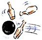

This is an archived copy of History Matters, provided by the Roy Rosenzweig Center for History and New Media. To explore this content in a new interface, visit Who Built America?.

1. John Quincy Adams 1825–1829
2. Andrew Jackson 1829–1837
3. Woodrow Wilson 1913–1921
4. Calvin Coolidge 1923–1929
5. Richard Nixon 1969–1974 |
 A. Bowling
B. Telling dialect jokes
C. Riding mechanical horses
D. Skinny dipping in the Potomac
E. Cockfighting |